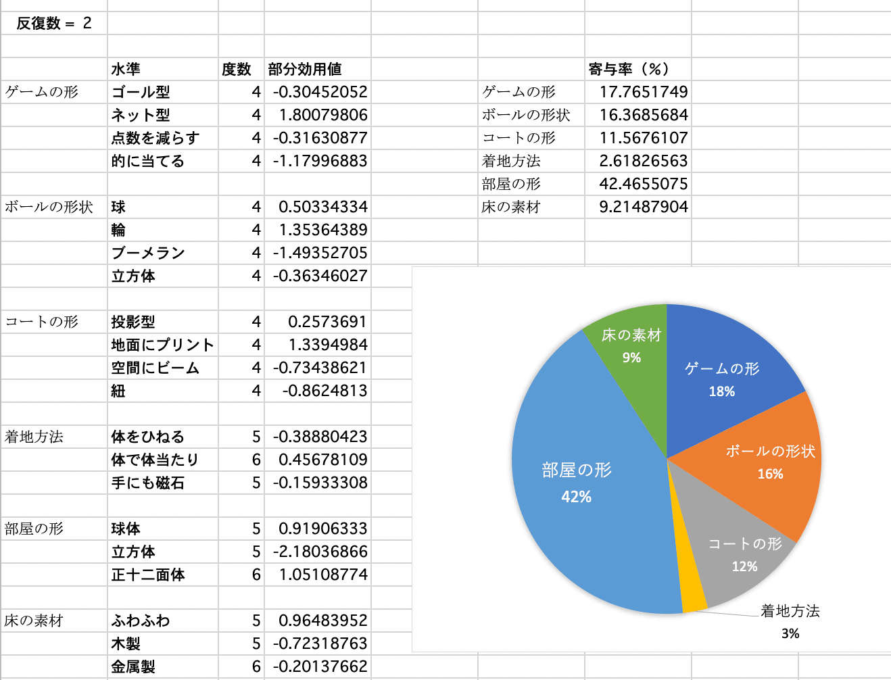
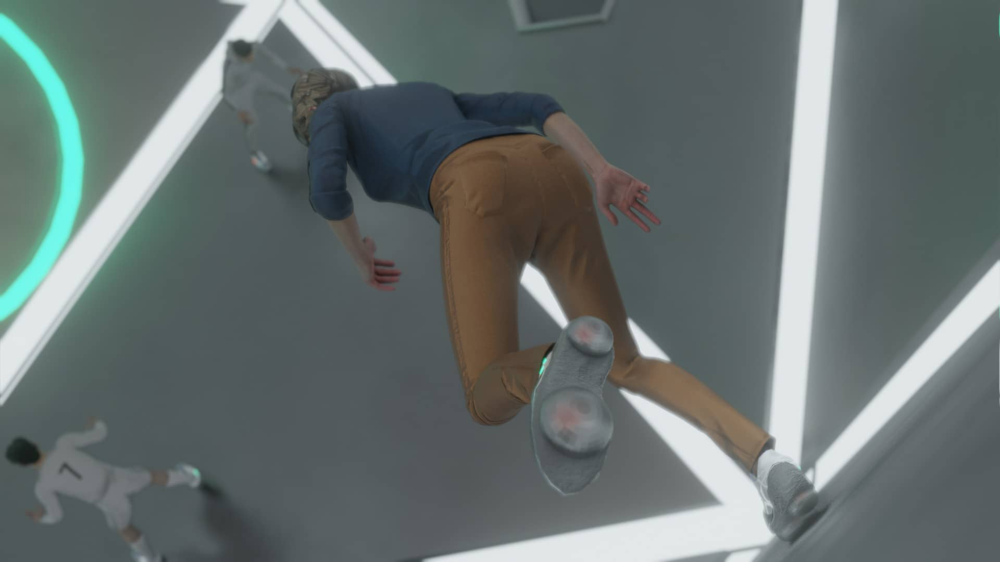
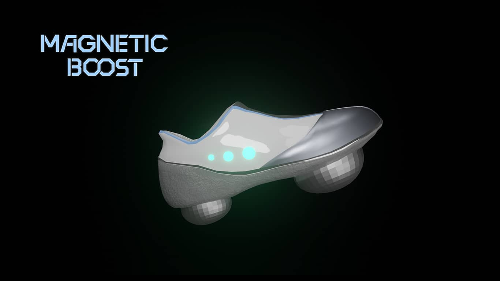
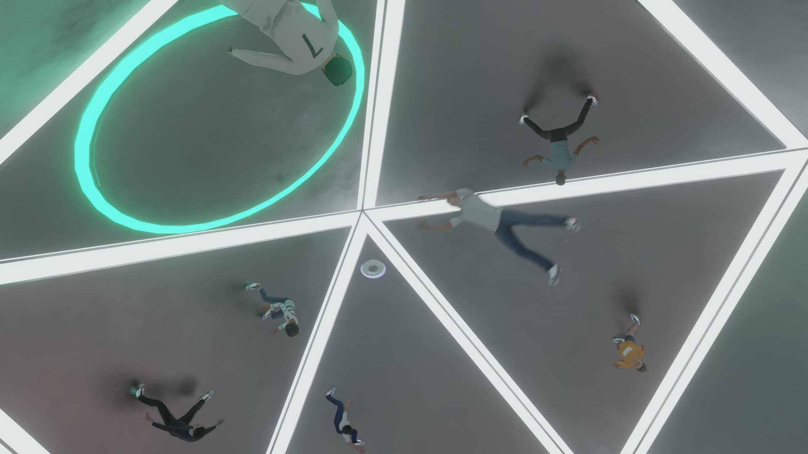

Astrohoop / アストロフープ
スポーツ / UX / プロダクト デザイン
課題設定
「宇宙大航海時代〜宇宙長期滞在のためのデザイン〜」
制作期間
１ヶ月半（授業課題）/ 2020年
使用したソフトウェア
blender / Illustrator / After Effects / Premiere Pro


宇宙での問題
雑誌で毛利衛さんの対談の記事を読んでいて、「宇宙では足が邪魔なんです」という言葉がありました。私にとってこの言葉は非常に印象深く、また同時に大きな衝撃を受けました。
宇宙ではそれほどに足を使う機会がないようです。
そして、それならば宇宙で足を使うスポーツを行う機会があれば良いのではないかと考え、宇宙スポーツをテーマに設定しました。
宇宙には毎日の筋トレ用のマシーンはありますが、スポーツを行える体育館のようなスペースがなく、また、現段階ではスポーツを含め娯楽が非常に少ないと言えます。
宇宙飛行士はもちろん、今後、一般人も宇宙に長期間滞在することを考えた時にスポーツで体を動かし足を使うことは、健康維持にもつながり心のリフレッシュにもつながると考えられます。
プロセス ---スケッチから分析---
足を使うスポーツをするには、体を床に固定することが最も重要になります。宇宙空間でも磁石は使えるようなので、足の固定方法を床と磁石で接着することをまず決めました。
そして宇宙空間では上下左右の概念が存在しないことを考慮し、スポーツを行う際に必要となる要素と水準を挙げて、コンジョイント分析で必要最低限の結果を出すために、組み合わせのスケッチを行いました。
そして同級生にアイデアスケッチの評価に協力してもらい、評価結果からコンジョイント分析を行いました。
分析結果は以下の通りです。

部屋の形は無重力であることを活かすことができる球に近い正十二面体が選ばれました。アイデアのブラッシュアップ時に、正十二面体よりも正二十面体の方ができることが増えのではないかと気がついたので、正二十面体のコートにしました。
またボールの形状は、輪っか型の評価が高い結果となりました。輪っか型ボールは腕にかけて移動することも可能であるので、ボールの形状は輪型でデザインすることに決めました。
ゲームの形態については、ネット型が良いとされましたが、今一度コートの形と輪っか型のボールを中心に、ゲーム形態のシュミレートをすると、自陣の移動のみとなりそうなネットを挟む形態のゲームよりも、足を使ってゴールへ向かって移動するゴール型スポーツの方が、適していると考えたのでゴール型のスポーツでブラッシュアップしていきました。
モデリングは3Dモデリングツールのblenderに挑戦しました。画像は初期の進捗状況です。CGを制作しながら全体のイメージを掴み、細かいルールやデザインなどを詰めていきました。
プレー＆ルール動画
完成した提案とCGは動画にしてまとめました。アストロフープのプレーシーン、ルールについてはこちらの動画をご覧ください。（上記の動画と同じ動画です。）


専用シューズ「Magnetic Boost」を着用してゲームを行います。靴底の半球は磁石性で、金属製の床に体を固定することができます。靴底がフラットだと靴底全てが床に引きつけられてしまい、移動しづらいと考えたので、半球状のデザインにしました。
またMagnetic Boostはワンポイントがチームカラーに発光します。上下も分からなくなるコート内でのチームの目印となります。
